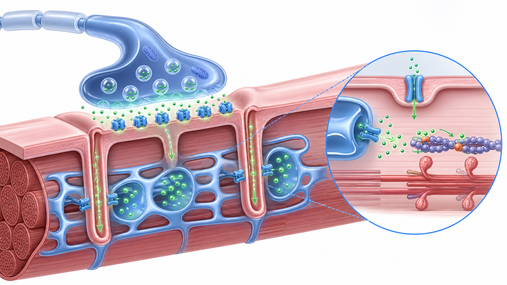

Day 27 · 运动单位募集与神经肌肉控制深化

运动单位分 S、FR、FF: S 慢而耐久，FR 快且较耐疲劳，FF 快、强、易疲劳。身体不会一开始就全员上场，而是按大小原则从低阈值小单位招到高阈值大单位。
力量继续升高时，神经系统靠两招: 招更多单位，也让已招单位放电更密。训练还会让运动单位在关键时间窗口更同步，并减少无关肌肉代偿，让主动肌输出更省更准。
打开 Day27 原学习页 →
运动单位分 S、FR、FF: S 慢而耐久，FR 快且较耐疲劳，FF 快、强、易疲劳。身体不会一开始就全员上场，而是按大小原则从低阈值小单位招到高阈值大单位。
力量继续升高时，神经系统靠两招: 招更多单位，也让已招单位放电更密。训练还会让运动单位在关键时间窗口更同步，并减少无关肌肉代偿，让主动肌输出更省更准。
打开 Day27 原学习页 →


今日新知识 Day27：S、FR、FF 三类运动单位各自关键词是什么？
今日新知识 Day27：大小原则怎样解释“轻重量难优先练到高阈值单位”？
今日新知识 Day27：频率编码和募集有什么区别？
Day26：钙离子和 ATP 在横桥循环附近分别负责什么？
Day24：为什么说氧化系统不只是“慢跑系统”？
Day20：膝内扣减速为什么会提高 ACL 风险？
Day13：深蹲下降、底部停顿、起立分别对应什么收缩？
场景题：客户练箱跳：计划 5 组×5 次，组间只休 30 秒。第 1 组能跳 60cm 且落地稳；第 3 组开始跳不上同高度，落地膝内扣，起跳前下蹲变深还停顿。你先怎么判断，下一组怎么调？
| 易错点 | 错因 | 修正句 |
|---|---|---|
| 把运动单位当成单根肌纤维 | 漏掉运动神经元和支配关系。 | 运动单位是一个 alpha 运动神经元及其支配的全部肌纤维。 |
| 把力量只归因于肌肉围度 | 忽略募集、频率编码、同步化和效率。 | 早期力量增长常先来自神经适应。 |
| 以为轻重量永远练不到 II 型相关高阈值单位 | 把大小原则理解成绝对禁止。 | 接近力竭时也可能参与，但时机、疲劳和目标不同。 |
| 把同步化理解成所有单位永远同时放电 | 过度字面化。 | 同步化是关键输出窗口更协调，不是永久同频。 |
| 爆发训练越累越好 | 把代谢疲劳当成神经质量。 | 爆发训练要保速度、招募和同步质量，常需更充分休息。 |